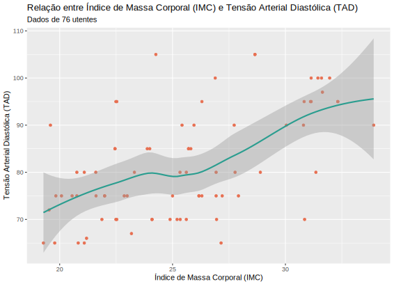

Diogo Correia - 99211
Projeto Computacional - Probabilidade e Estatística
Pergunta 4
library("openxlsx")
library("dplyr")
library("ggplot2")
df <- read.xlsx(xlsxFile = "Utentes.xlsx", sheet = 1)
df %>%
ggplot(aes(x = IMC, y = TAD)) +
geom_point(colour = "#e76f51") +
stat_smooth(method = loess, color = "#2a9d8f") +
ggtitle("Relação entre Índice de Massa Corporal (IMC) e Tensão Arterial Diastólica (TAD)") +
labs(subtitle = "Dados de 76 utentes") +
xlab("Índice de Massa Corporal (IMC)") +
ylab("Tensão Arterial Diastólica (TAD)")

Através do gráfico obtido, conseguimos concluir que existe uma correlação entre o Índice de Massa Corporal (IMC) e a Tensão Arterial Diastólica (TAD), em que quanto maior o IMC, maior será a TAD.
Esta correlação é mais acentuada para valores de IMC superiores a 27.5.